вверх
(c) 1997-2003 Центр ОТСМ-ТРИЗ технологий
(с) 1997-2003 OTSM-TRIZ Technologies Center
http://www.trizminsk.org
16 Nov 2003
|
НАЧАЛО
|
ТРИЗ-ДВИЖЕНИЕ В МЕЖДУНАРОДНОМ ДЕТСКОМ ЦЕНТРЕ "АРТЕК"
Материал создан по инициативе и при активном участии Гафитулина Марата Семеновича, marat@zhukovskiy.ru
|
|
Вся деятельность участников событий изначально осуществлялась в рамках образовательного проекта "Джонатан Ливингстон" http://www.trizminsk.org/e/jl.htm Последние события (октябрь 2002 года) прошли под эгидой названного проекта и при участии Международной Ассоциации ТРИЗ. Историческая справка включает в себя период с января 1997 по май 2003 и составлена на основе артековских воспоминаний Н.Н.Хоменко, А.В.Корзун, Н.И.Королевой, И.Я.Гуткович, В.Г.Березиной и Т.А.Сидорчук. |
ЯНВАРЬ-МАРТ 1997 ГОДАВ январе 1997 состоялась личная встреча Генерального директора МДЦ "Артек" М.М.Сидоренко с координатором проекта "Джонатан Ливингстон". Н.Хоменко. Михаил Михайлович заинтересовался ТРИЗ и предложил Николаю Хоменко сотрудничество. В марте 1997 Н.Н.Хоменко подготовил текст проекта "ТРИЗ в "Артеке" и весной в рамках этого проекта провел семинар с педагогами детского центра. Успех семинара был очевиден. Николай Николаевич был приглашен на серию семинаров в "Артек", но в силу объективных причин они не состоялись. Содержанием тризовских семинаров Н.Н.Хоменко заинтересовался Игорь Владимирович Роговой, зам. Генерального директора по образовательным вопросам. В свою очередь, Николай Николаевич предложил администрации "Артека" пригласить Т.А.Сидорчук для проведения серии семинаров для дошкольного учреждения. МАЙ 1998 ГОДАВ ДОУ № 2, где воспитывались дети сотрудников "Артека", Татьяна Александровна была приглашена 10 мая 1998. Пятидневный семинар, проведенный в рамках проекта "Джонатан Ливингстон", имел успех. Т.А.Сидорчук была принята Генеральным директором М.М.Сидоренко. В беседе были обсуждены пути дальнейшего сотрудничества с воспитателями ДОУ. В ходе семинара проводились показательные занятия с детьми дошкольного возраста и уроки в начальной школе. Директор школы предложил Т.А.Сидорчук участвовать осенью 1998 в III Международном конкурсе учителей в "Артеке". Дошкольному учреждению подарены видеокассеты с играми и занятиями ДОУ № 242 Ульяновска и библиотечка по использованию ТРИЗ - РТВ в работе с дошкольниками. ОКТЯБРЬ 1998 ГОДА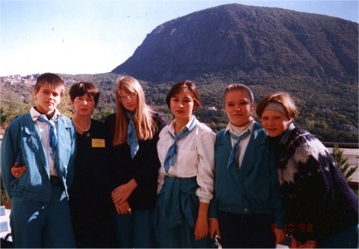
В октябре 1998 года Т.А.Сидорчук приняла участие в подсеминаре учителей начальной школы III Международного конкурса учителей. Ею было показано 3 урока (в 10 кл. - "Модели составления метафор", во 2 кл. - "Эвроритм", в 3 кл. - "Морфоанализ"). Творческий вечер основывался на идее, подсказанной В.Г.Березиной. В сборнике работ конкурсантов опубликована специально подготовленная статья "ТРИЗ - педагогика Третьего тысячелетия". Позже эта статья была напечатана в первом номере журнала "Образование без границ" 2001), издаваемого в "Артеке" одноимённой благотворительной организацией. Для Артековского ДОУ Т.А.Сидорчук подготовила программу экспериментальной деятельности по внедрению ТРИЗ-технологии в образовательный процесс, однако в связи с резким ухудшением финансового положения "Артека" эксперимент в ДОУ так и не открыли. В финал конкурса Т.А.Сидорчук не вышла. Как потом пояснили организаторы, жюри затруднялось в оценке этих занятий, потому что они по форме не были уроками. МАЙ 1999 ГОДАПо собственной инициативе Т.А.Сидорчук и Н.М.Журавлева (Тольятти) приехали в мае 1999 на финал конкурса в "Артек" и участвовали в Международной научно-практической конференции "Диалог образовательных систем в современном развивающемся мире". На эту конференцию приезжал и М.И.Меерович. ОКТЯБРЬ 1999 ГОДАБлагодаря настойчивости и усилиям отдела сравнительного образования и лично руководителя отдела Ю.Н.Кравченко с осени 1999 года первые подсеминары на Международном конкурсе учителей были объявлены как "Начальная школа и ТРИЗ-технология". Это означало, что при оценке конкурсных уроков ТРИЗ-педагогов жюри будет готово учитывать специфику этих занятий. А также в программу образовательного семинара, сопровождающего конкурс, на этом этапе включаются лекции и мастер-классы по ТРИЗ. Т.А.Сидорчук начала рекламу конкурса и рекомендовала к участию в октябре 1999 на IV Международный конкурс Н.И.Королеву (Ульяновск) и М.И.Хазинурову (Трехгорный, Челябинской обл.). В этом конкурсе приняла участие также директор школы, работающей в рамках ТРИЗ-технологии, под кураторством Г.И.Иванова А.Г.Игнатьева (Ангарск). В этом же учебном году, но в весеннем подсеминаре, показала занятия по ТРИЗ с учениками средней школы Н.Э.Чижевская Минск) Всеми этими участниками уроки строились с использованием ТРИЗ и РТВ. Качество проведенных занятий было высоким, они заметно отличались от уроков других конкурсантов. Для проведения семинарской программы отделом в октябре 1999 были приглашены А.Г.Карлов (Севастополь), М.И.Меерович, Л.И.Шрагина (Одесса) и Т.А.Сидорчук (Ульяновск). В подсеминаре приняла участие А.В.Корзун (Минск) Карлов А.Г. выступил с докладами: "История и современное состояние ТРИЗ - технологий", "Развитие ТРИЗ-технологий в образовании, науке, технике и бизнесе в странах СНГ и за рубежом". Выступление строилось на материалах Н.Н.Хоменко в рамках проекта "Джонатан Ливингстон". Меерович М.И. сделал сообщение на тему "Формирование культуры мышления в учебном процессе" и показал два открытых урока для участников семинара: решение задачи "Пирога Робинзона" и ММЧ. Сидорчук Т.А. выступила на темы: "Развитие речи и мышления посредством ТРИЗ-технологий", "Система подготовки педагогов по ТРИЗ и РТВ" показала мастер-класс по решению задач "Да-Нет" в 4-м классе. Корзун А.В. (преподаватель Минского педагогического колледжа №2 им. М.Танка) провела мастер-класс с учащимися 4-го класса по использованию алгоритма сочинения сказок. На лекционный материал и открытые уроки приходили не только участники семинара и члены жюри, но и преподаватели Артековских школ. Интерес педагогов "Артека" к ТРИЗ явно просматривался. |
|
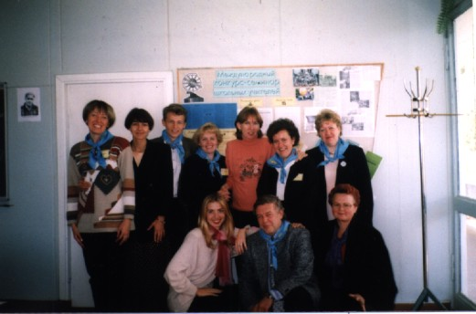
Несколько слов о Международном конкурсе учителей в "Артеке"Международный детский центр "Артек" в 1996 году впервые организовал и провел первый международный конкурс-семинар школьных учителей. Проект этого конкурса занял первое место и признан ЮНЕСКО "Проектом 21 века" по итогам конкурса лучших проектов в сфере Международного сотрудничества в области образования. Авторы проекта ѕ вице-президент Ассоциации школьных директоров штата Коннектикут (США), доктор Роберт Кэрролл и Генеральный директор МДЦ "Артек" М.М.Сидоренко. Проект был признан и поддержан педагогами и психологами России, Беларуси, Германии, Дании, Израиля, Китая, Италии, Латвии, Литвы, Молдовы, Украины, США, Японии. Были и разработаны критерии оценки педагогического труда. Идея проекта включает в себя:
Международный конкурс-семинар решает задачу поддержки престижа учительской профессии, педагога-профессионала, педагога-творца. МДЦ "Артек" учредил денежные премии и призы учителям победившим в конкурсе. Все уроки, занятия и творческие вечера подсеминаров снимаются на видеопленку. Педагогические эссе, пишутся каждым участником конкурса и печатаются в сборниках. В рамках конкурса-семинара учреждено общественное движение "Образование без границ". Финалисты конкурса участвуют в Международной научно-практической конференции "Диалог образовательных систем в современном развивающемся мире". На этих конференциях выступают видные ученые мирового уровня в области педагогики. |
МАЙ 2000 ГОДА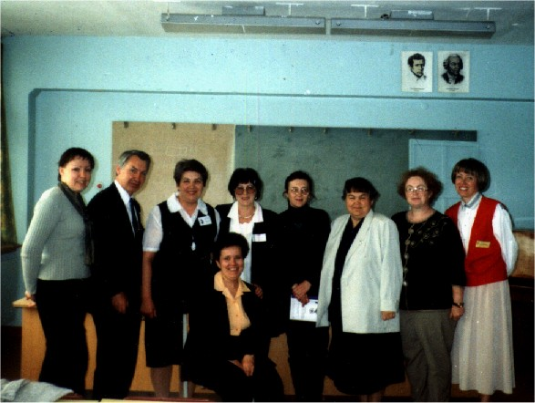
ТРИЗ - педагогика организаторами была замечена всерьез и поэтому в мае 2000г в финальных мероприятиях IV Международного конкурса 1999 - 2000 были организованы творческие мастерские "Современные образовательные технологии", где работала секция ТРИЗ-РТВ-технологий. Ею руководили М.И.Меерович и Т.А.Сидорчук. В работе участвовали педагоги, которые используют ТРИЗ - технологии в обучении: Л.А.Шрагина (Одесса), А.Г.Карлов (Севастополь), А.В.Корзун (Минск), М.И.Хазинурова (Трехгорный, Челябинская область), А.Г.Игнатьева (Ангарск), Н.А.Резник, Е.А.Резник (Днепропетровск), Н.М.Журавлева (Тольятти), Л.А.Григорович (Москва) и др. В это же время работала постоянно действующая выставка инновационного педагогического опыта. Самая большая экспозиция была развернута по ТРИЗ-педагогике. На ней были представлены научно-исследовательская деятельность и опыт работы Украинской лаборатории педагогики ТРИЗ (М.И.Меерович, Л.А.Шрагина), экспериментальной школы Днепропетровска (Н.А.Резник, Е.А.Резник), НМЦ № 242 и педагогического колледжа № 1 Ульяновск (Т.А.Сидорчук). В финал конкурса вышла учительница начальных классов Трехгорный М.И.Хазинурова, которая в своей педагогической деятельности использует методы и приемы ТРИЗ и РТВ. Она заняла 4 место из 12 финалистов. Благодаря успешной работе ТРИЗовцев, организаторами конкурса было принято решение в 2000-2001 учебном году приглашать на конкурс воспитателей дошкольных учреждений, преподавателей колледжей и ВУЗов, а так же расширить программу ТРИЗ - образования. СЕНТЯБРЬ-ОКТЯБРЬ 2000 ГОДАТРИЗовский подсеминар V Международного конкурса учителей в "Артеке" проходил в период с 29 сентября по 13 октября 2000. Среди семерых учителей-конкурсантов трое работали с использованием ТРИЗ: Ефремов С.В. (Рязань), Костюнина М.В. (Ульяновск), Орлова И.Е. (Челябинск). Уроки этих учителей отличались высоким уровнем новизны и хорошим качеством организации учебного процесса. По предложению организаторов семинарскую программу, в основном, подготовила и проводила Т.А.Сидорчук. Она прочитала две лекции на темы: "Что такое ТРИЗ педагогика: новое содержание или технология?" и "Формирование системного мышления обучающихся на основе ТРИЗ и РТВ". Ею так же был показан мастер-класс. 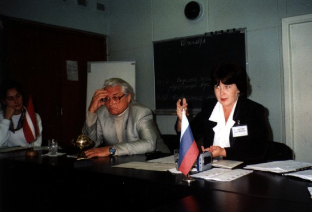
Впервые был проведен круглый стол по проблемам ТРИЗ-РТВ в современном образовании. Вели обсуждение Т.А.Сидорчук и Б.П.Битинас (Литва). Активно и явно заинтересовано участвовали в ТРИЗ-программе, приехавшие по собственной инициативе, группа педагогов под руководством Н.И.Королевой (Ульяновск), А.В.Корзун (Минск), И.Я.Гуткович (Ульяновск), педагоги "Артека" и учителя из Симферополя и Ялты. МАЙ 2001 ГОДАФинал V Международного конкурса учителей в "Артеке" проходил с 15 по 23 мая 2001. На финале было большое представительство тризовцев из России и Беларуси, которые участвовали в обширной программе. 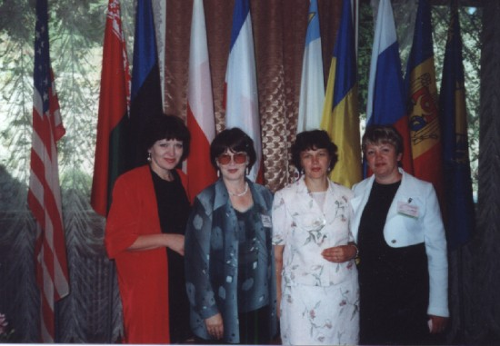
В рамках Международной выставки инновационного педагогического опыта "Непрерывное образование от идеи до внедрения";
Руководитель отдела сравнительного образования Кравченко Ю.Н. предложил в мае 2001. Т.А.Сидорчук разработать программу системного использования ТРИЗ в образовательном процессе "Артека". Было договорено:
ИЮЛЬ-АВГУСТ 2001 ГОДА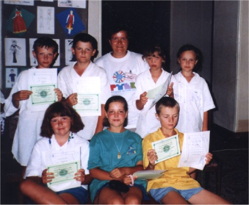
Реализация направления "Летняя школа Артека "Умники и Умницы"" была предложена Корзун А.В. Первый проект "Международные летние школы Артека" состоялся 18 июля - 1 августа 2001 года на базе лагеря "Хрустальный". В школе "Умники и Умницы", которая работала по программе Т.А.Сидорчук "Учимся творчеству", занималось 7 детей 10-13 лет. Занятия строились на основе игр и тренингов, развивающих системное мышление и формирующих навыки создания творческого речевого продукта (загадок, сказок). Общий курс составил 16 часов. Дети отмечали, что навыки, полученные в летней школе "Артека", им помогут стать более успешными в учёбе. ОКТЯБРЬ 2001 ГОДАС 9 по 23 октября 2001 года проходил подсеминар VI-го Международного конкурса школьных учителей в "Артеке". Важным явился факт, что в этом году впервые номинация ТРИЗ-педагогики прозвучала и в средствах массовой информации (радио, телевидение). Номинацию ТРИЗ-педагогики представляли учитель русского языка и литературы из Ульяновска Голынская Н.Н. и учитель математики из Петрозаводска Белова Г.В. (представитель лаборатории гимназии №30, коллега А.А.Нестеренко1). Уроки этих педагогов были отмечены членами жюри при обсуждении конкурса, один из них сказал: "Когда увидел уроки Галины Беловой, понял, что настоящие педагогические кадры растут в Карелии". Параллельно с конкурсом традиционно проводилась семинарская программа под руководством Т.А.Сидорчук. По официальному приглашению "Артека" в программе принимали участие В.Г.Березина (Челябинск) и А.В.Корзун (Минск). Соруководителем семинара была включена Маранцман Е.К. - к.пс.н., доцент Российского гос.пед. ун-та им. Герцена (Спб.). 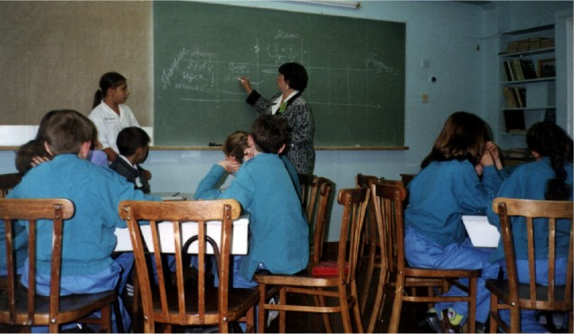
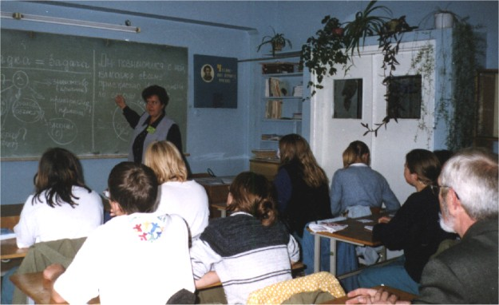
Т.А.Сидорчук и А.В.Корзун успешно провели мастер-классы в Артековской школе и прочитали лекции по ТРИЗ-педагогике:
Соруководитель семинарской программы психолог Е.Маранцман для своего выступления, посвященного психологическому анализу урока учителя, из всех видеозаписей уроков в Артеке за пять лет выбрала урок учителя-тризовца из Трехгорный, Челябинской обл. М.И.Хазинуровой. Анализ проводился с целью показать, что высокая результативность урока достигнута исключительно благодаря учету психологических факторов. Марина Ивановна Хазинурова, как автор урока, со своей стороны доказывала эффективность использования ТРИЗ-инструментария. Таким образом, анализ урока превратился в содержательную дискуссию, в которой с большим интересом приняли участие все присутствующие педагоги. В рамках семинарской программы состоялись также 2 круглых стола по проблемам современного образования. В конкурсной и семинарской программах, в качестве своеобразной группы поддержки, приняли участие педагоги-тризовцы Н.И.Королева (Ульяновск), С.В.Лелюх (Самара) и М.И.Хазинурова (Трехгорный, Челябинской обл.). 15 октября в Международный День Тризовца при содействии всей команды были организован стенд и выставка с фотографиями, документами, литературой и материалами, посвященными 75-летию Генриха Сауловича Альтшуллера, 45-летию первой публикации и 40-летию издания первой книги по ТРИЗ. Этим датам было посвящено замечательное выступление В.Г.Березиной "Стратегия жизни Г.С.Альтшуллера, этапы создания и развития ТРИЗ: краткий исторический экскурс к 75-летию со дня рождения Г.С.Альтшуллера". Было зачитано и передано руководству "Артека" поздравительное послание к участникам и организаторам Международного конкурса педагогов в "Артеке" от Президента Международной Ассоциации ТРИЗ Марата Семеновича Гафитулина. В дар "Артеку" В.Г.Березиной были переданы книги Г.С.Альтшуллера и другие материалы по ТРИЗ. Участники встречи получили справку по ТРИЗ со ссылками на адреса некоторых тризовских сайтов. Отметить День Тризовца в "Артеке" приехали наши коллеги из Севастополя:
ЯНВАРЬ 2002 ГОДАВ январе 2002 в рамках Конкурса проходила номинация "Преподаватель Высшей школы". Т.А.Сидорчук рекомендовала трех кандидатов наук: Л.А.Григорович (Москва), М.А.Ковардакову (Ульяновск) и А.Г.Карлова (Севастополь), к участию в этой номинации. Ими были прочитаны по две лекции для студентов Гуманитарного университета, дано практическое занятие и показана презентация авторского курса. Любовь Алексеевна Григорович вышла в финал VI Международного конкурса. МАРТ 2002 ГОДАВ марте 2002 Т.А.Сидорчук администрацией "Артека" было предложено написать сценарий и отобрать видеоматериал для фильма по ТРИЗ - педагогике. Сидорчук Т.А. совместно с операторами телестудии "Артека" был создан сценарий, отобран видеоматериал тризовских уроков и отснят пояснительный материал к фильму "ТРИЗ в обучении от детского сада до университета". Монтаж фильма был намечен на февраль 2003, а его презентация на финале VII конкурса учителей. МАЙ 2002 ГОДА
Финал VI конкурса был организован в мае 2002. В рамках финала проходила традиционная выставка инновационного педагогического опыта, в которой приняли участие 9 образовательных учреждений из 5 стран СНГ. Дошкольное образование представляла заведующая Центром развития ребенка - Детским садом № 178 "Облачко" И.Я.Гуткович (Ульяновск, Россия). Экспертом представленного МДОУ методического материала была профессор Римского университета Сирена Мария Веджетти. Данный материал по использованию ТРИЗ в дошкольной педагогике нашел широкий интерес, как у членов жюри, так и у слушателей. Ирина Яковлевна дала интервью образовательному каналу Украинского телевидения. МДОУ получил сертификат участника Международной выставки. На финал и конференцию приезжали педагоги Севастополя, которые используют ТРИЗ в своей практике. |
АВГУСТ 2002 ГОДА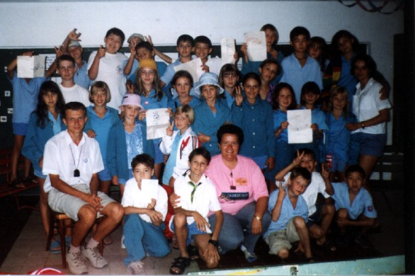
С 7 по 27 августа на базе лагеря "Озёрный" состоялась вторая целевая смена "Международные летние школы "Артека". Все дети, приехавшие на отдых в этот лагерь, имели возможность пройти образовательный курс по одной из 18 авторских программ. Одной из них являлась школа "Умники и умницы". Цель этой школы - ввести ребят в практику работы с творческими задачами, показать возможность управления мышлением и воображением. Программа, разработанная руководителем школы Корзун А.В. и рассчитанная на 30 часов, была построена на основе ОТСМ-ТРИЗ-РТВ. Основным содержанием занятий была работа с творческими задачами из книги Г.Альтова "И тут появился изобретатель", а также картотек Ю.Саламатова, Г.Иванова, А.Гина. Были использованы также методические материалы А.Нестеренко, Т.Сидорчук, Н.Хоменко, А.Корзун. На основе этих материалов разработаны и подарены кабинету сравнительного образования образовательного центра "Артек" методические рекомендации по реализации программы летней школы "Умники и умницы". Обучение в школе "Умницы и умники" прошли 33 ребёнка в возрасте от 9 до 14 лет. По результатам занятий им были вручены сертификаты "Артека". Видеофрагменты работы школы были включены в рекламный видеофильм о "Летних школах Артека". В рамках этого проекта были организованы курсы повышения квалификации для педагогов-организаторов (вожатых), в программу которых вошли 2 ознакомительные лекции по теме "Возможности применения элементов ТРИЗ-технологии в работе с детьми в условиях летнего лагеря". Лекции вызвали большой интерес у слушателей. СЕНТЯБРЬ-ОКТЯБРЬ 2002 ГОДАС 24 сентября по 5 октября 2002 года в МДЦ "Артек" стартовал VII Международный конкурс педагогов. В номинации ТРИЗ-педагогика" в этом году выступили два учителя. Н.В.Рубина, руководитель Лаборатории ТРИЗ-РТВ гимназии №17 Петрозаводска, сертифицированный специалист по ТРИЗ, Республика Карелия, Россия. С.И.Гин, учитель экспериментального класса средней школы № 51 Гомеля, Республика Беларусь. Наталия Викторовна представила на суд жюри три урока, которые были построены на материале, позволяющем показать возможности обучения детей младшего школьного возраста основам РТВ и ТРИЗ. Ученики 5-го класса гимназии №17 Петрозаводска, приехавшие на конкурс со своей учительницей, продемонстрировали умение самостоятельно применять алгоритм решения творческих задач. Светлана Ивановна провела два урока по своим авторским курсам "Мир логики" и "Мир человека", а также продемонстрировала возможность использования ТРИЗ-инструментария в традиционном школьном курсе "Человек и мир. Уроки Светланы Ивановны отличались содержательностью и технологичностью. Прошедший подсеминар конкурса имел несколько значимых особенностей. 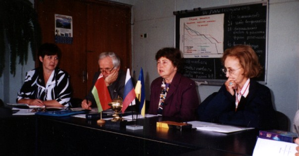
Впервые в состав Большого международного жюри конкурса была приглашена Т.А.Сидорчук (к.п.н., зав. кафедрой педагогических технологий Ульяновского социально-педагогического колледжа, сертифицированный специалист по ТРИЗ, Россия). Включение специалиста по ТРИЗ-педагогике в состав жюри свидетельствует о серьёзном отношении к данной номинации в конкурсе. 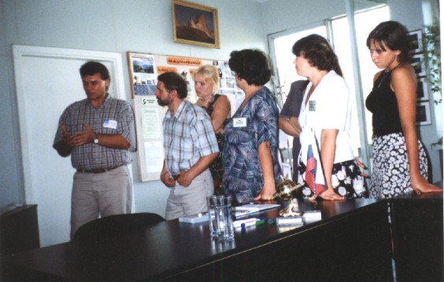
В качестве руководителя семинарской программы выступил Марат Семёнович Гафитулин (к.п.н., Президент МА ТРИЗ, Мастер ТРИЗ, Россия). Марат Семёнович прочёл две лекции по темам "Модель перспективного образования и ТРИЗ" и "Познание и творчество. Оценка познавательной активности. Оценка творческого результата", а также провёл мастер-класс с ребятами 3-го класса Артековской школы. Семинарская программа, благодаря работе на предыдущих конкурсах, а также популяризации со стороны Отдела сравнительного образования Образовательного комплекса "Артек", привлекла большое внимание. Специально для участия в семинаре приехали 16 человек из России и Республики Беларусь (Минск, Гомель, Ульяновск, Самара, Тырныауз, Петрозаводск, Трёхгорный). Это практикующие педагоги, представители администрации дошкольных учреждений и школ, а также журналист Государственной теле-радио компании Республики Карелия Семёнова С.Н. (Петрозаводск, Россия). Послушать лекции по ТРИЗ-образованию и посмотреть мастер-класс приехали также практикующие учителя из Ялта (Крым, Украина). 27 сентября 2002 по инициативе участников семинара вне официальной программы состоялся "Круглый стол". На этой встрече Президент МА ТРИЗ М.С.Гафитулин рассказал об истории создания Международной ассоциации ТРИЗ, предложил к обсуждению предлагаемую им концепцию развития МА ТРИЗ, а также сделал обзор состоявшихся в последнее время конференций по проблемам ТРИЗ и ТРИЗ-образования. Секретарь МА ТРИЗ Н.В.Рубина рассказала о состоявшемся конкурсе МА ТРИЗ для учащихся и студентов, о детской олимпиаде "Икариада", прошедшей в Петрозаводске в октябре 2001 года. Т.А.Сидорчук познакомила участников "Круглого стола" с историей появления ТРИЗ-номинации в конкурсе педагогов в "Артеке". Руководитель школы "Умники и умницы" в проекте "Международные летние школы Артека" А.В.Корзун поделилась впечатлениями по результатам работы этой школы в августе 2002 года на базе лагеря "Озёрный". Затем, каждый из участников мероприятия рассказал о своих планах и направлениях работы в области ТРИЗ-образования. |
|
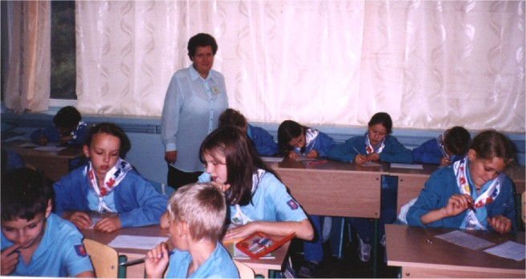
|
|
По инициативе Отдела сравнительного образования в рамках подсеминара была проведена творческая олимпиада для учащихся начальной школы. Её программа была составлена по аналогии с конкурсными заданиями, проводимыми МА ТРИЗ для детей в номинации "Начальная школа", а также на основе опыта педагогов. Особенностью олимпиадных заданий было то, что они имели творческую направленность, хотя не являлись заданиями по ТРИЗ. Это объяснялось необходимостью поставить в равные условия детей, которые обучаются на основе ТРИЗ-технологии, и не имеющих такой подготовки. Вела олимпиаду А.В.Корзун, преподаватель Минского государственного педагогического колледжа № 2 им. М.Танка. В олимпиаде приняли участие 80 детей, приехавших на конкурс со своими учителями. Из них 20 ребят - ученики С.И.Гин и Н.В.Рубиной. Организаторы конкурса встретились с президентом МА ТРИЗ М.С.Гафитулиным и обсудили дальнейшие планы ТРИЗ-образования в "Артеке". В настоящее время, назначен новый Генеральный директор МДЦ "Артек". Михаил Михайлович Сидоренко ушел с этой должности по состоянию здоровья. Проекты, начатые организаторами Конкурса совместно с ТРИЗ-педагогами, пока приостановлены. Инициатор распространения ТРИЗ-педагогики в рамках Международного конкурса Юрий Николаевич Кравченко, к сожалению, перешёл из отдела "Сравнительного образования" на другую должность. Т.А.Сидорчук выражает огромную благодарность за все, что сделал для ТРИЗ - движения, замечательному профессионалу Ю.Н.Кравченко. Постоянные участники образовательных ТРИЗ-проектов в "Артеке" присоединяются к ней. Финал VII Международного конкурса педагогов намечен на первые числа октября 2003. В финал вышла учитель начальных классов Гомеля Гин Светлана Ивановна. В рамках финала конкурса намечена выставка инновационного педагогического опыта, куда получила персональное приглашение И.Я.Гуткович, заведующая экспериментальным МДОУ № 178. Пожелаем им успехов! 2 июля 2003 ПОСТСКРИПТУМ...Когда материал готовился к публикации, стало известно о том, что финал VII Международного конкурса педагогов в октябре 2003 года по объективным причинам не состоится. 14 октября 2003 года ушёл из жизни Михаил Михайлович Сидоренко - Генеральный директор МДЦ "Артек" в 1992-2002 годах. В самые трудные для "Артека" годы Михаил Михайлович сумел сохранить лучшие воспитательные традиции. Это его усилиями создавался и жил Международный конкурс педагогов. С его согласия работали "Летние Школы Артека". Благодаря ему, в "Артеке" пять лет велись проекты, связанные с ТРИЗ-педагогикой… Михаил Михайлович считал развитие "Артека" делом своей жизни. И делал его изо всех сил... 1 О деятельности лаборатории и результатах ТРИЗ-эксперимента см. http://home.onego.ru/~alla_triz, а также www.trizminsk.org\e\260010.htm |
вверх |
(c) 1997-2003 Центр ОТСМ-ТРИЗ технологий (с) 1997-2003 OTSM-TRIZ Technologies Center http://www.trizminsk.org 16 Nov 2003 |